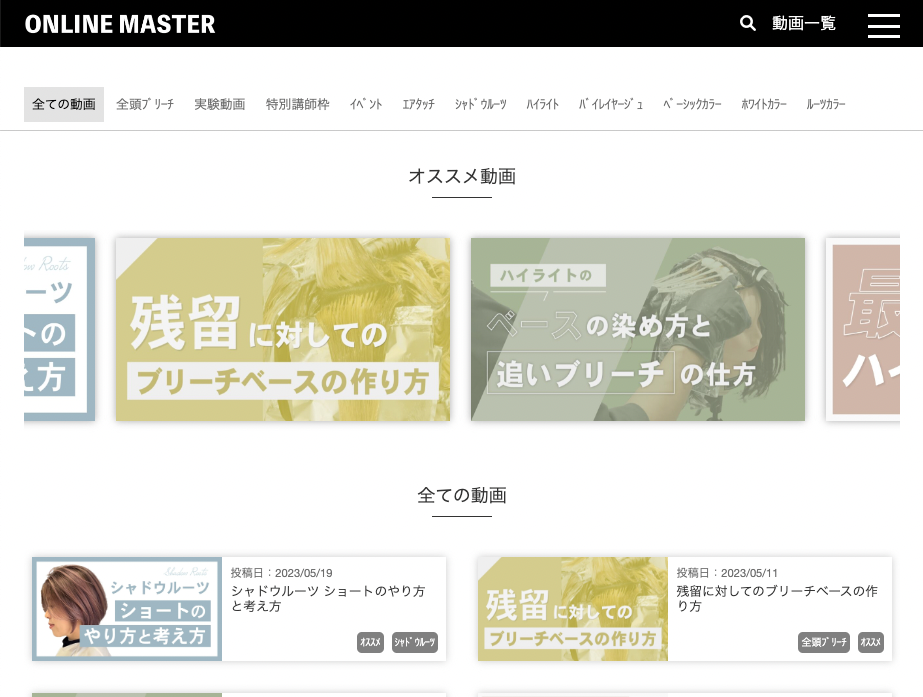

Shuya Hiranuma
「ものづくり」で身近な人を「幸せに」がモットーです。
「IT」×「建築」が専門です。
「IT」×「建築」が専門です。
大阪在住で、Webエンジニアとして活動しております。
ホームページやラウンディングページ、WEBアプリケーション、サーバー・インフラ関係など幅広く携わっています。
プログラムだけでなく、ノーコードやローコード、AIを活用した開発も可能です。
主にWEB制作をしておりました。
現在、営業活動してないですが、ご依頼があれば対応いたします。
フルスクラッチ、ノーコード（ローコード）、CMSなど幅広く対応できます。
新卒後、約３年間働きました。
建築専攻だったので、建築士法に関するシステム、建設現場の職人さんが利用するアプリの企画や要件定義を担当しておりました。
他にも、電子サインシステムの導入、VR展示場の導入、メタバース戦略などの事業に携わっておりました。
PMと設計、開発を担当しております。
フルスタックエンジニア
